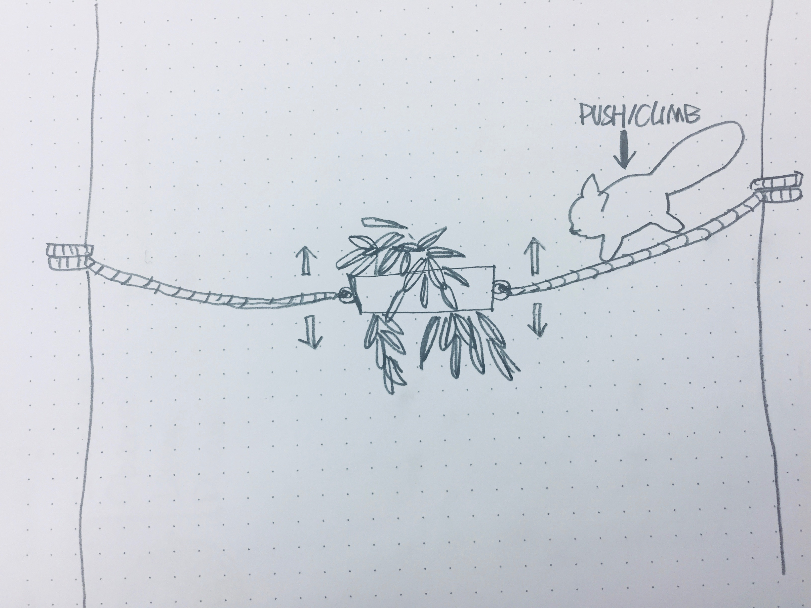
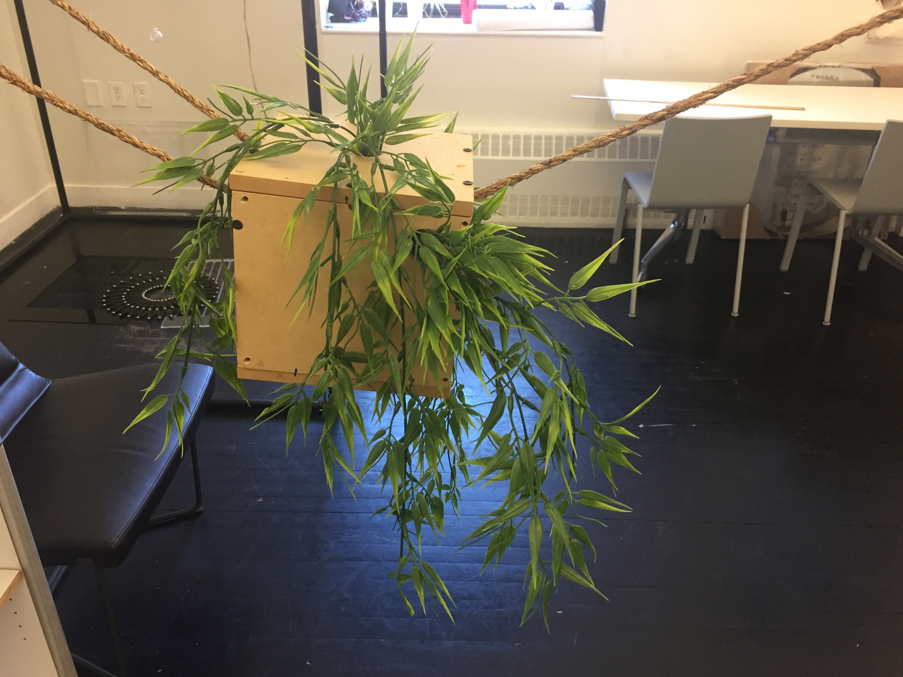

Enrichment II ---- Red Panda
Yufei Zhang
1. Further Reacher & Redesign
After making two enrichment proposals last week, which are a proper physical environment structure and a set of adjustable bamboo holders for the red panda, I got the feedback from the experts which indicate that my enrichments are too fundamental and not creative enough. Some suggest that the moveable bamboo might be an interesting idea but it needs deeper development. I do love the idea of making a feeding enrichment for the red panda but I can't really come up with an idea from the old enrichment proposal, so I decided to give those up and start from scratch again.
According to Newberry 1995 Environmental Enrichment Review, the way we design our enrichment should be based on what human want from the animal, in this case, our focus for the enrichment for the red panda as an endangered species should be how it would help them be able to survive when they are released back into the wild.

So I spent a huge amount of time watch documentation of red panda in different zoos and how they interact with the environment and the administer. I found some behavior red panda has that I wasn't expecting and I thought could be the starting point of my new proposal. Then I try to find documentation of red panda in the wild and try to find similar behavior so I can understand the meaning behind those behaviors and try to make enrichment to encourage the same behavior for the red panda in the zoo if that behavior is important for their survival in the wild. But I can't find much documentation of red panda in the wild so I have to be careful to see if there are Anthropomorphism in my judgment.
-
Play/Hunting Behavior
I found this behavior with happens when this red panda tries to "play" with the orange. For red panda, the signature move for aggressive behavior is when they raise up their pows and put it next to their head to make them seems bigger.
I think this kind of behavior could be important. Although bamboo is the main food source for the red panda, they also eat birds or eggs because of the limited energy provided by bamboo. And cause they live in the high altitude area and sometimes it will snow, those are an actually important food source, so one of the ideas will design an enrichment that makes the red pandas in the zoo learns how to defend themselves and hunt with their pows.
-
Foraging Behavior


After watching a lot of zoo recording videos, I found that the variety of food provided by different zoos for red pandas and the way they provide food are not the same. Many zoos use only food bowls when feeding and provide pre-treated food. Even for foods like bamboo, many zoos only provide bamboo leaves directly to the red pandas.
However, for the red panda's wild ability to survive in the wild, the ability to forage is very important. Since red pandas only eat the young leaves of plants, they often need to feed on relatively small and tender branches in the wild. In the video, the red pandas in the wild will first press the body on the branches to test the load-bearing capacity of the branches, and then they will climb the branches for food while maintaining the balance of the body.
So now I have two choices: one is to make an enrichment to exercise the self-defense/hunting behavior of the panda. The other is to make an enrichment to exercise the ability of the panda to forage on the thin branches. Considering that the first option may involve the use of sensors and circuits to sense the attack behavior of the pandas, then release the corresponding food. In the reading article, it is mentioned that in the design of the enrichment, the enrichment itself should not be considered, and the production cost and maintenance cost of the enrichment should be considered comprehensively. At the same time, considering the problem of Option 1, there is still uncertainty about whether the impact of this enrichment on the red panda is to allow it to exercise hunting behavior or to cultivate a conditioned reflex behavior for the red panda in react to this enrichment.So I decided to go with the second proposal.
2. Proposal
This enrichment is a feeding device that is set up in the physical living environment of red pandas. Bamboo branches or delicate leaves are stored in the device. Ropes are attached to the device and attached to the climbing device in the living environment of the red panda. When the red panda tries to eat the food in the device, because the device is connected by a rope, the weight of the red panda will act on the rope, causing the rope to bend, and the whole device will shake up and down to simulate the red panda trying to climb in the wild. At the same time, the size of the device itself is not too large to ensure that the panda does not stand on the food-loading device, but keeps climbing on the rope to eat the leaves.
3. Making Progress
4. Bodystorm

Since human beings are much larger than the size of the red pandas, I have not chosen to enlarge my prototype considering all aspects, instead, I let people simulate the process of red pandas climbing on the branches and foraging with their hand. So their hand should hold the rope as the red panda climb the rope and push the rope down to simulate how red panda's weight will bend the rope and for in the wild, bend the small branches.
5. Final Video
6. Future Iteration
-
The current model does not take much into account the difficulty of replacing the internal food process. In the future I may improve this device to allow it to provide fresh food over a longer period of time.
-
This enrichment does not play much of a role in an adoption area where no climbing structure is provided.